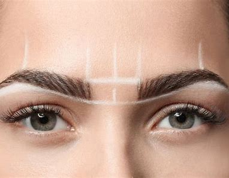

Diseño de Cejas
Un servicio único donde nos concentramos en medir y analizar la estructura de las cejas según las proporciones de cada rostro con el objetivo de favorecer, mejorar asimetrías y destacar la mirada.